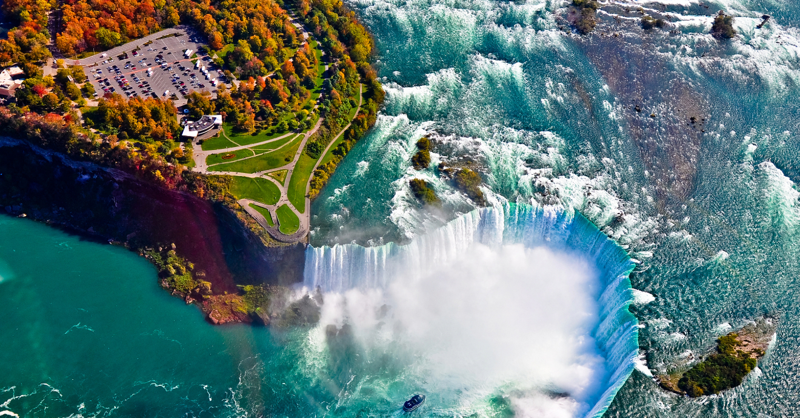

Pontos Turísticos do Canadá
O Canadá é conhecido por suas belezas naturais impressionantes e suas cidades modernas cheias de atrações famosas.
Cataratas do Niágara
Um dos destinos mais conhecidos do mundo, as Cataratas do Niágara impressionam pela força da água e pelo cenário único na fronteira com os Estados Unidos.
- Conjunto de três quedas d’água: Horseshoe Falls, American Falls e Bridal Veil Falls.
- Alto volume de água, sendo uma das maiores quedas em fluxo do mundo.
- Localizadas na fronteira entre Canadá e Estados Unidos, muito famosas pelo turismo e passeios de barco.
Lago Louise
Localizado em Alberta, o Lago Louise é famoso por suas águas azul-turquesa cercadas pelas Montanhas Rochosas, sendo um dos cartões-postais do Canadá.

- Água de cor turquesa intensa devido ao pó de rocha (farinha glacial).
- Localizado nas Montanhas Rochosas, dentro do Parque Nacional de Banff.
- Rodeado por glaciares e trilhas, sendo um dos destinos mais fotografados do país.
Torre CN
A icônica torre localizada em Toronto oferece uma vista panorâmica incrível da cidade e é uma das estruturas mais famosas da América do Norte.
- Foi uma das torres mais altas do mundo, com 553 metros de altura.
- Possui um mirante com piso de vidro e vista panorâmica de Toronto.
- Inclui o EdgeWalk, uma atração em que visitantes caminham pela parte externa da torre.
Old Quebec
Um dos lugares mais históricos do país, Old Quebec preserva arquitetura colonial francesa e é considerado um Patrimônio Mundial da UNESCO.

- É a maior província do Canadá em área e a única de maioria francófona.
- Possui forte identidade cultural influenciada pela herança francesa.
- Abriga cidades importantes como Quebec City (capital) e Montreal.